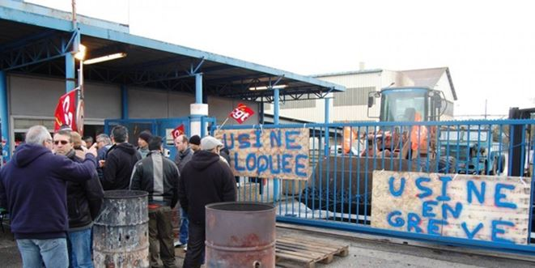

Le langage des minorités me rappelle parfois celui du stalinisme, ni voyez aucune allusion aux évènements sociaux que nous vivons.
Au doux temps de la norme et du plan, la dictature, celle des masses et du prolétariat représentés par un parti unique maintenait sous une chape de plomb ceux qui justement étaient considérés comme des minorités asociales. D’ailleurs, on les enfermait dans des asiles psychiatriques afin de les traiter, car, ne pas adhérer aux idées du parti, était considéré comme une maladie mentale qu’il convenait de soigner.
Or, aléas de l’histoire, nous vivons justement l’inverse. Les masses laborieuses étant devenues minoritaires, certains syndicats qui ne représentent qu’eux-mêmes, se considèrent dans ce pays d’exception qu’est la France, comme les gardiens d’un ordre disparu, celui de la dictature d’un prolétariat idéalisé. Ils sont arc-boutés sur les avantages acquis donc immuables d’un monde qu’ils ont contribué indirectement à faire disparaitre par leur immobilisme et leur refus d’adaptation au progrès considéré sans nuance comme une régression.
Cela justifie donc toute action de blocage, les vieux syndicalistes possèdent encore au fond de leur cœur le rêve pionnier de la jeunesse ? « Dès l'âge de 9 ans, le jeune était presque automatiquement enrôlé dans l'organisation jusqu'à ses 14 ans, seuls les cancres, les voyous et les enfants des « ennemis du peuple » (c’est-à-dire ceux des opposants politiques) en étaient exclus ».
Leur langage a le mérite d’être simple à défaut d’être simpliste. Ma vérité est la seule et si tu n’es pas d’accord c’est donc que tu es, soit l’ennemi du peuple donc ton propre ennemi, soit un nervi des patrons, soit un patron, soit un malade mental.
Ce langage sans nuance, péremptoire, que nous entendons ici ou là par des cégétistes, mais pas seulement, rejoints par des opportunistes parfois hystériques, renforce le sentiment diffus d’une mainmise sur la société par une minorité agissante qui se considère comme une majorité en s’appuyant sur des sondages biaisés ou, comme les pionniers d’un mouvement social dont la justification relève d’une manipulation perverse de la pensée - puisque t’es trop con pour comprendre le mouvement, on le mène pour toi, alors subis et tais-toi - Nous sommes minoritaires en nombre mais nous traduisons la pensée majoritaire, nous sommes donc légitimes.
Ainsi, une poignée agissante de syndicalistes peut bloquer l’entrée d’une usine et dix excités lycéens trotskistes interdire à des centaines d’élèves passifs et moutons d’entrer dans un établissement censé enseigner l’ouverture d’esprit et la tolérance.
Le droit de grève en France est devenu le droit d’emmerder la majorité des non-grévistes sous prétexte que cette minorité agissante fait grève à la place de ceux qui ne peuvent pas, l’autisme ne peut être le leur, l’autiste c’est l’autre. Il faut donc être contre toute mesure mettant en danger leurs prérogatives et leurs privilèges quitte à foutre en l’air une partie de l’économie et notamment celle d’un nouveau prolétariat qu’ils ignorent et méprisent, celui des petits indépendants, des petits patrons, de ceux qu’ils ont conduit au chômage, car de leur point de vue, il vaut mieux fermer une usine plutôt que de céder sur les avantages acquis. Leur stratégie est donc claire : peser sur le gouvernement actuel en adressant un message par anticipation aux futurs dirigeants du pays. Mesurez notre force !
Votre programme de réforme ne passera pas ! Juppé, Sarko et Fillon, Lemaire et consort, Macron et Hollande allez-vous faire voir !
Nous ne voulons pas plus de votre social-démocratie que de votre libéralisme, ce que nous voulons, c’est défendre nos derniers bastions : SNCF, Energie, transport, dockers, livres... (Boycotter la sortie de journaux à l’exception de l’Humanité, sous prétexte qu’ils refusent de publier un éditorial de Martinez, en est un exemple).
Nous sommes minuscules mais puissants, nous sommes la dictature et nous l’assumons, nous avons conscience que nous combattons pour notre survie. Ce combat sera celui de notre dernière chance. Car Martinez et SUD (pour « solidaires, unitaires, démocratiques ») savent qu’en 2015, les créations d'emplois liés à des projets d'implantation internationale se sont effondrées de 25 % en France tandis qu'elles ont augmenté de 35 % au Royaume-Uni, de 44 % en Allemagne et de 27 % en Pologne !
Consciemment ils savent que l’implantation de groupes internationaux sonnerait le glas de leur confort et tout chômeur supplémentaire est, selon eux, une potentialité de recrutement pour des futures troupes.
Car ils n’ont pas abandonnés l’espoir d’un grand soir et pour l’atteindre, ils sont prêts à faire de la France un désert, car c’est sur les ruines que se bâtissent les dictatures. Rêves de folie et suicide collectif, ils savent que de ce combat naitra soit leur disparition soit l’accès au pouvoir. Leur langage est clair, cela passe par la remise en cause des institutions.
La CGT le sait, sa position de leader syndical ne tient plus qu’à un fil. Il faut donc élargir les rangs. D’autant que le nombre d’adhérents de la centrale, 676 623 fin 2014 (contre 868 600 adhérents pour le CFDT), a baissé de 2 % par rapport à l’année précédente.
La CGT n’a pas de programme, voilà fort longtemps que ce syndicat a compris l’inutilité d’un tel effort, le seul qui vaille la peine est celui de la conquête de ceux qui peuvent devenir un réservoir d’adhérents, les chômeurs, les retraités, les étrangers etc. D’ailleurs le discours prononcé lors du 120° anniversaire de la CGT est un discours politique de pure inspiration communiste:
« Le 1er mai 1934, la CGT appelle à manifester et cesser le travail contre le fascisme, pour la défense des libertés publiques et la rénovation de l’économie nationale,
Le 1er mai 1960, c’est l’appel de la CGT pour le désarmement, le bien-être et la paix en Algérie,
1968, la CGT participe au financement d’un bateau pour le Vietnam.
1997, la CGT déclare le racisme hors la loi,
Le 29 janvier 2014, le meeting à Montreuil à l’appel de la CGT, la FSU, Solidaires et les organisations syndicales de jeunesse, réunit 700 personnes, unies contre l’extrême droite pour le progrès social et l’égalité des droits.
La mondialisation capitaliste joue sur l’opposition des salariés entre eux au niveau mondial, entre les différents pays dont les droits sociaux sont inégaux voire inexistants »
On voit bien que dans cette évocation le souci n’est pas celui de la cogestion des entreprises et le développement des entreprises mais bien un discours internationaliste dans sa plus pure tradition socialo-communiste.
Mais la dictature de la conscience qui consiste à affirmer comme vérité l’internationalisme crétin rejoint bien d’autres discours dont celui d’une étude menée discrètement sur l’intégration. C’est une charge violente contre toute notion d’appartenance à des valeurs socioculturelles judéo-chrétiennes. Sous couvert de « lutte contre les discriminations », cette étude a un discours « différentialiste » qui en vient à nous expliquer que, finalement, en France aujourd’hui, ce n’est pas « l’intégration » dans un espace commun, ni autour de valeurs communes, qu’il faut offrir en partage aux personnes issues de l’immigration, mais un « droit à la différence ». Le français est une langue parmi d’autres, qui ne saurait être hégémonique. Dans ce rapport, retiré depuis, brouille les références et sème le trouble, des phrases en sont marquantes. « Les questions scolaires ne sont abordées que sous un seul angle : il convient de réécrire l’Histoire de France dont les héros sont trop blancs et trop hétérosexuels. C’est comme si vous alliez en Algérie et que vous demandiez aux Algériens de supprimer de leur Histoire les héros arabo-musulmans. » dit Malika Sorel, sociologue.
Le temps de la vigilance a sonné devant ces coups de boutoirs, ces vas et viens intempestifs contre ce qui est l’essence même de notre héritage et de notre histoire, telles des grandes marées qui montent à l’assaut des falaises et se retirent, il y a une tentative diffuse et sourde d’ébranler les fondements de notre société. La gauche traditionnelle joue avec le feu en laissant libre court à ces tentatives de radicalisation militante, tout en accusant la droite de ringardise. Cela renforce et stigmatise les sentiments extrêmes au risque d’entendre tout et n’importe quoi.
En effet, on voit bien l’intention de l’auteur, si les cloches sonnent pour les chrétiens, il n’y a aucune raison que des mosquées ne s’élèvent un jour la voix du Muezzin. La gauche de Khalid Magdani, sociologue, dans une tribune publiée par Médiapart en mars 2011, se demandait comment « continuer à accepter sans réagir que les cloches des églises sonnent tous les dimanches sans que rien ne soit fait pour faire cesser cette intrusion sonore et ostentatoire de la religion dans l’espace publique ». A la gauche aussi, les féministes radicales et les zadistes jouent avec le feu et ouvre la boite de Pandore.
En voulant accuser la droite traditionnelle d’un rapprochement supposé avec le Front national, elle renforce aussi ce mouvement. La conséquence est que la colère des gens normaux, c'est-à-dire la majorité silencieuse, ni raciste, ni homophobe, mais consciente du danger représenté par ces lobbies agissants, monte partout.
La révolution culturelle, souhaitée par une minorité très active, minorité très politisée qui a phagocyté des associations, mettent les politiques sous influence et risque de faire sauter certains verrous sociétaux.
Il ne faut pas radicaliser tous ceux qui croient encore raisonnablement aux valeurs républicaines. Cessez d’emmerder les français ! Messieurs les politiques, et vous, les syndicalistes, occupez-vous des vrais problèmes et pas seulement ceux de votre survie ou de votre réélection. Il est devenu plus que nécessaires de respecter les institutions par les urnes en dénonçant toute forme de dictature, celle de la rue comme celle des minorités. Sans quoi, nous ouvrons la boite de Pandore et nous serons tous collectivement perdants et ce sont nos enfants qui en paieront les conséquences.
Entre dictature des masses et dictature des minorités une voie s’impose, celle de la liberté de vivre et d’entreprendre. Cessez d’emmerder les Français !
Partager cette page